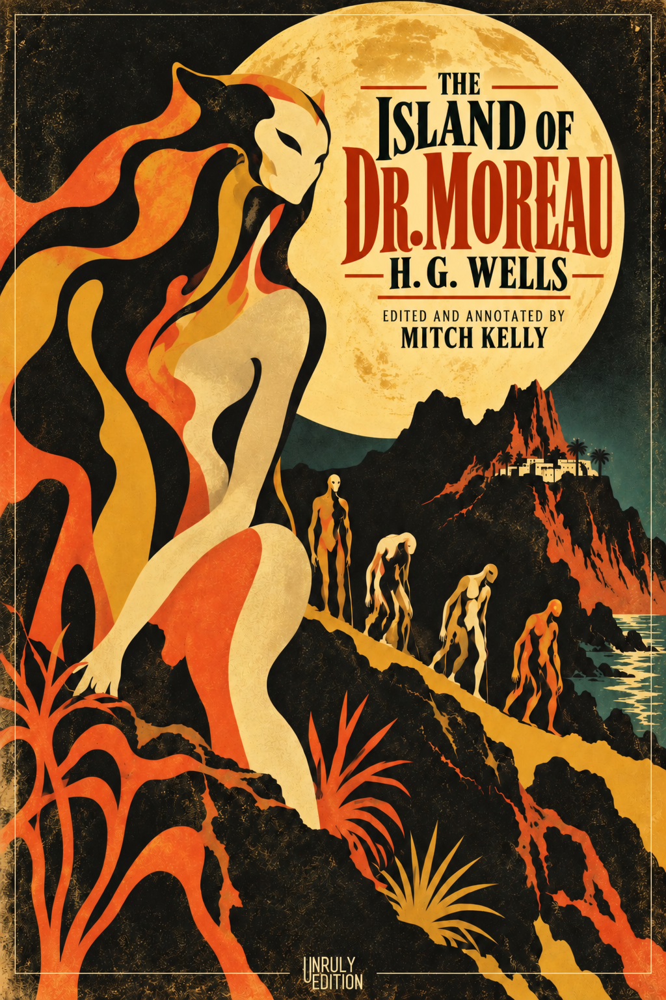

The Island of Dr. Moreau
Scientific competence is becoming accessible to individuals outside the institutions that once monopolized it. AI is lowering the cost of investigation, opening questions that established paradigms and funding priorities have left unexplored. Institutional permission and the ability to produce knowledge are coming apart.
This Unruly Edition returns to Wells’s novel from that emerging world. The freedom to investigate includes the citizen scientist’s ownership of experiments on their own body. It also carries a demanding standard: an experiment must be capable of proving its investigator’s favored explanation wrong. AI lowers the barrier, not the standard. Evidence can be built from the bottom up, without waiting for an institution to authorize the question.
